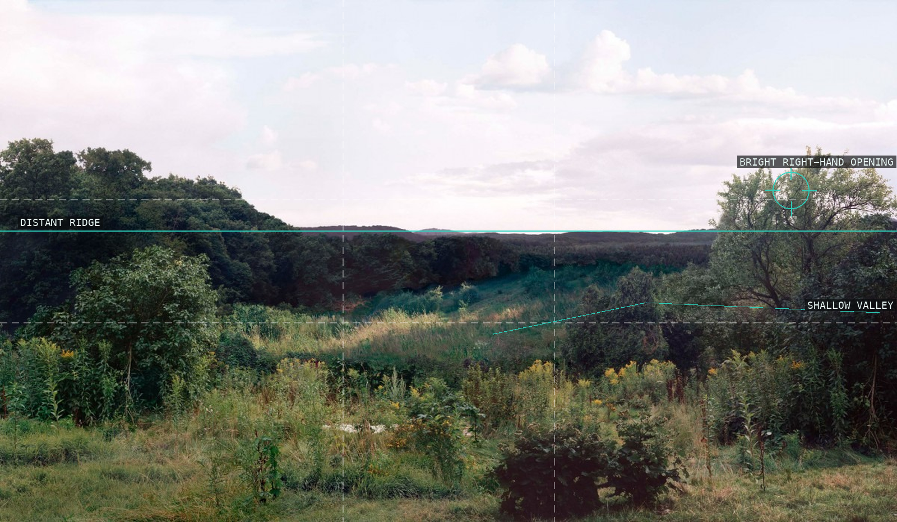
Distant ridge and shallow valley.
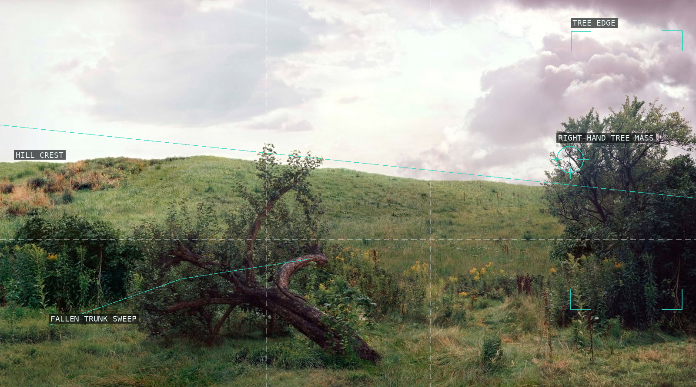
Fallen-trunk sweep and hill crest.
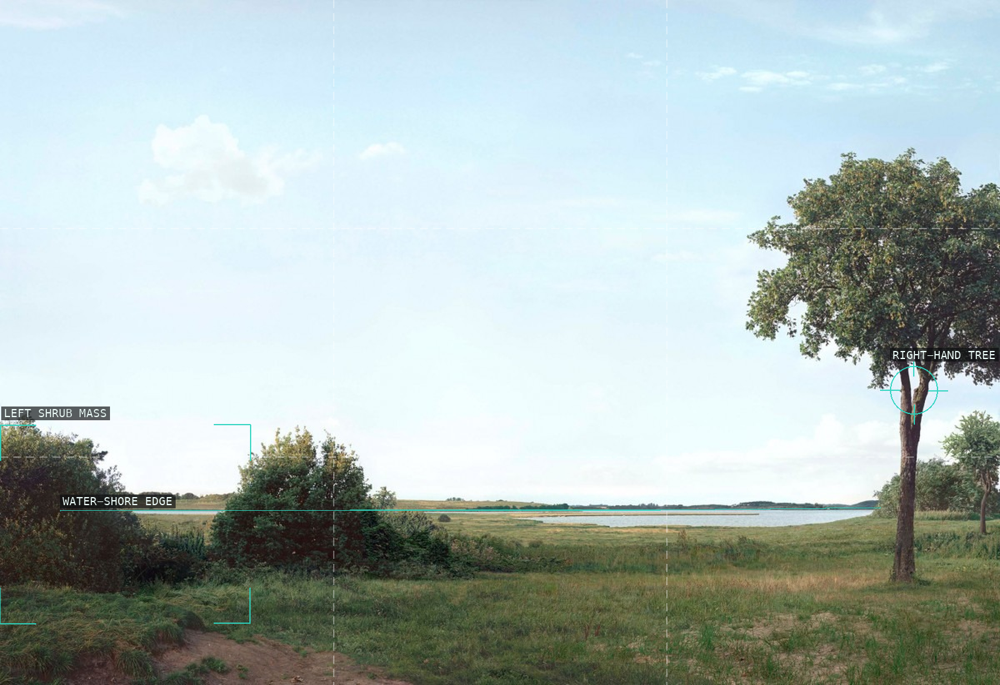
Water edge and right-hand tree.
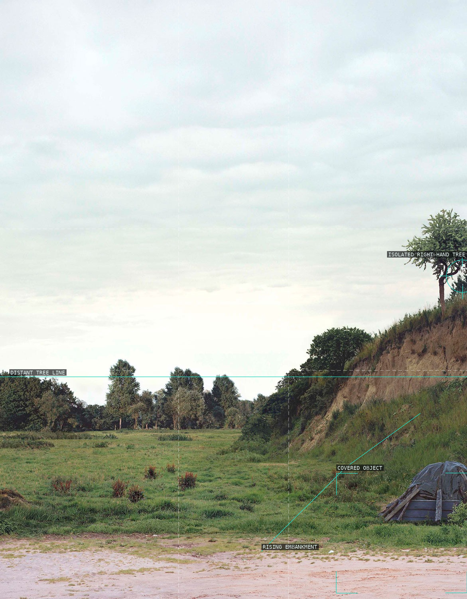
Open sky and rising embankment.
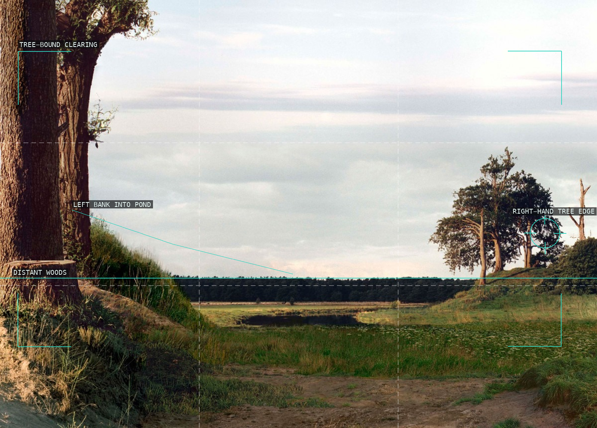
Tree-bound clearing and pond.
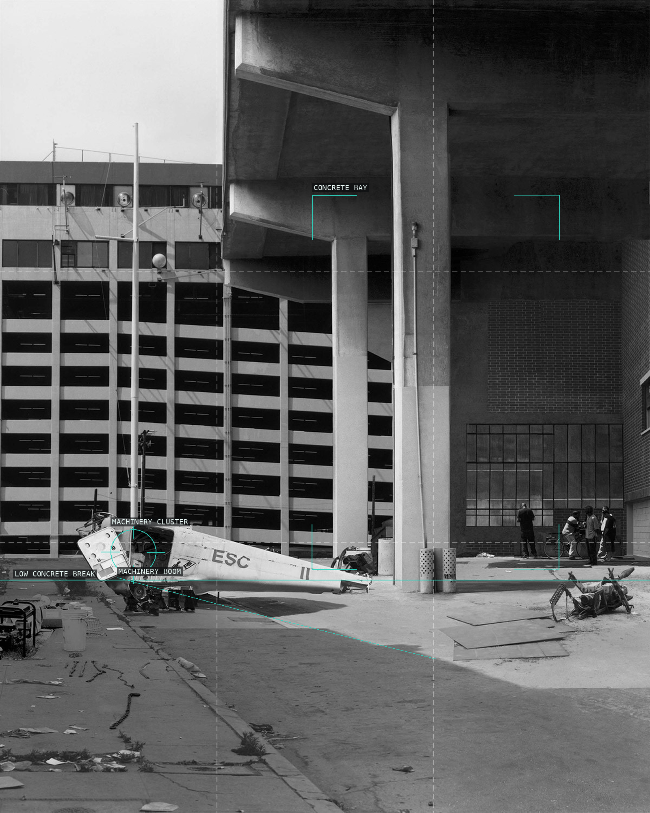
Concrete bay and shadow edge.
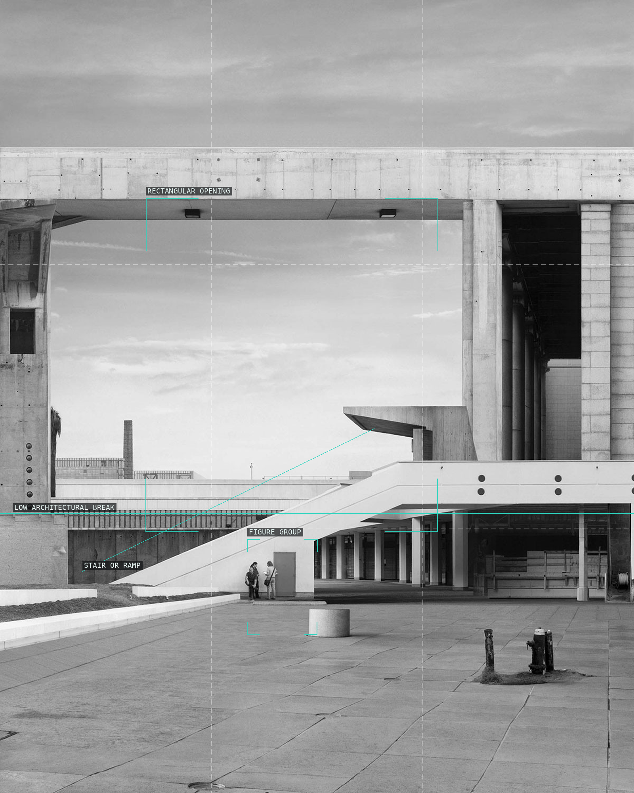
Ramp, opening, and figures.
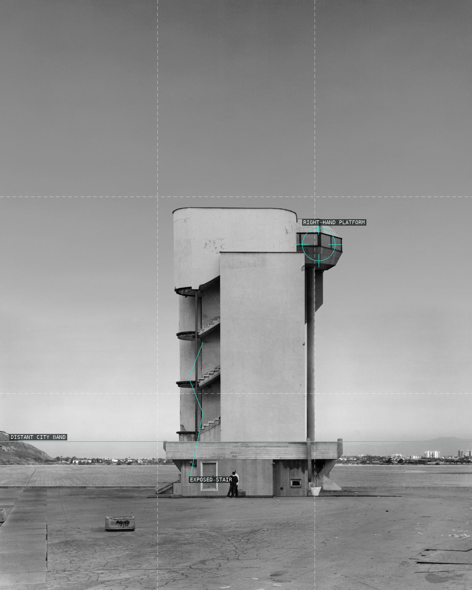
Tank mass and exposed stair.
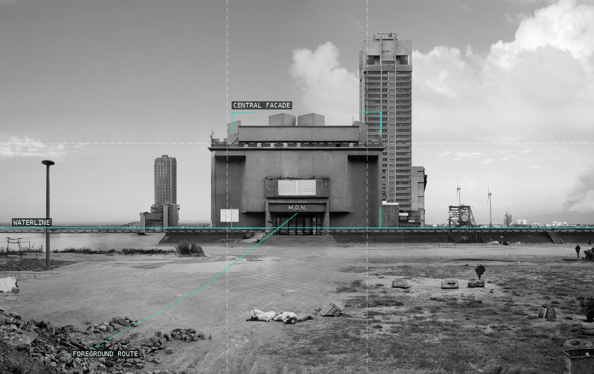
Waterline and foreground route.
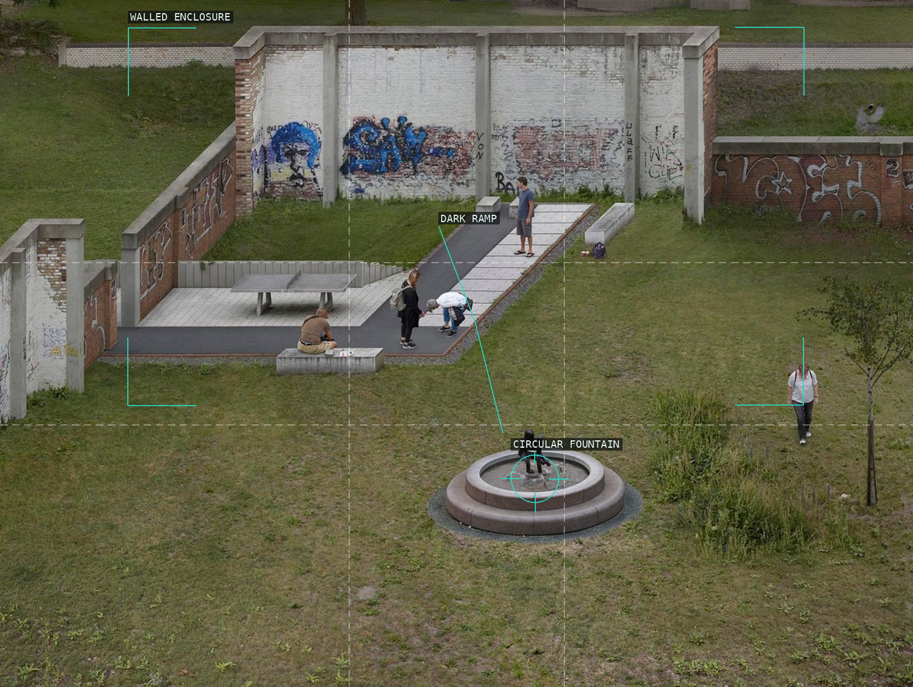
Fountain, ramp, and enclosure.

Wall cap and planter-edge zigzag.
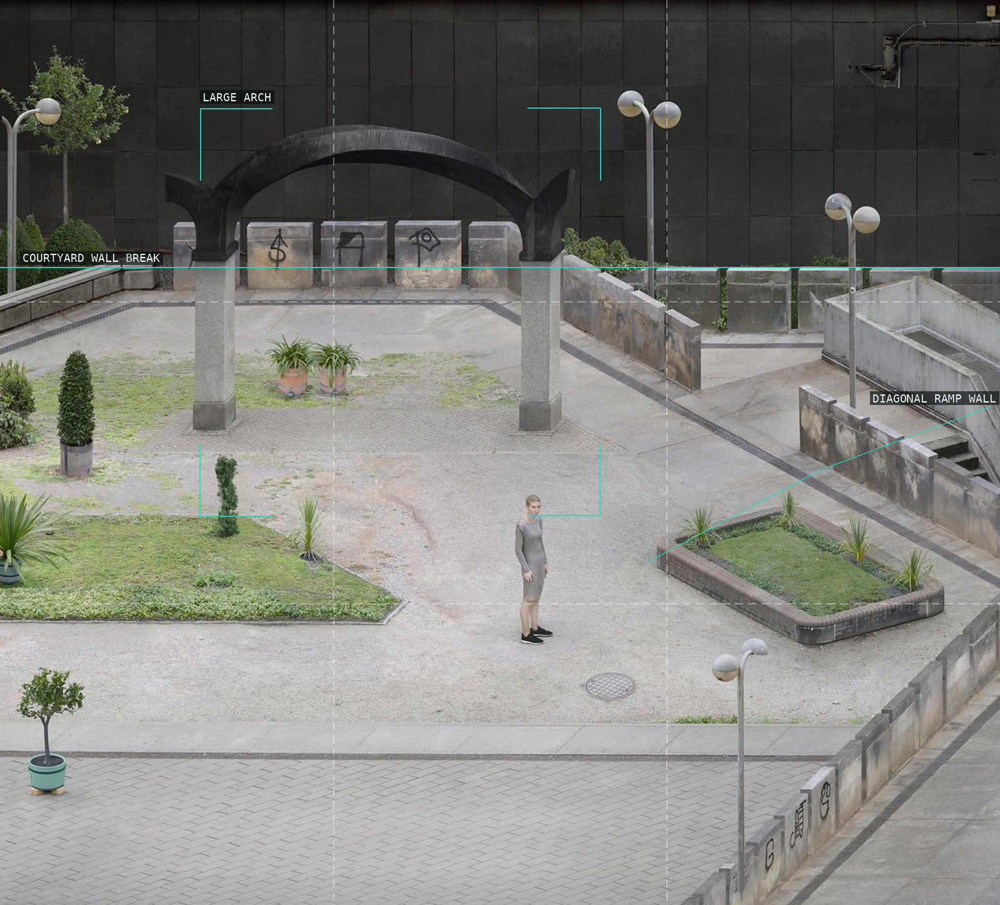
Arch and diagonal ramp wall.